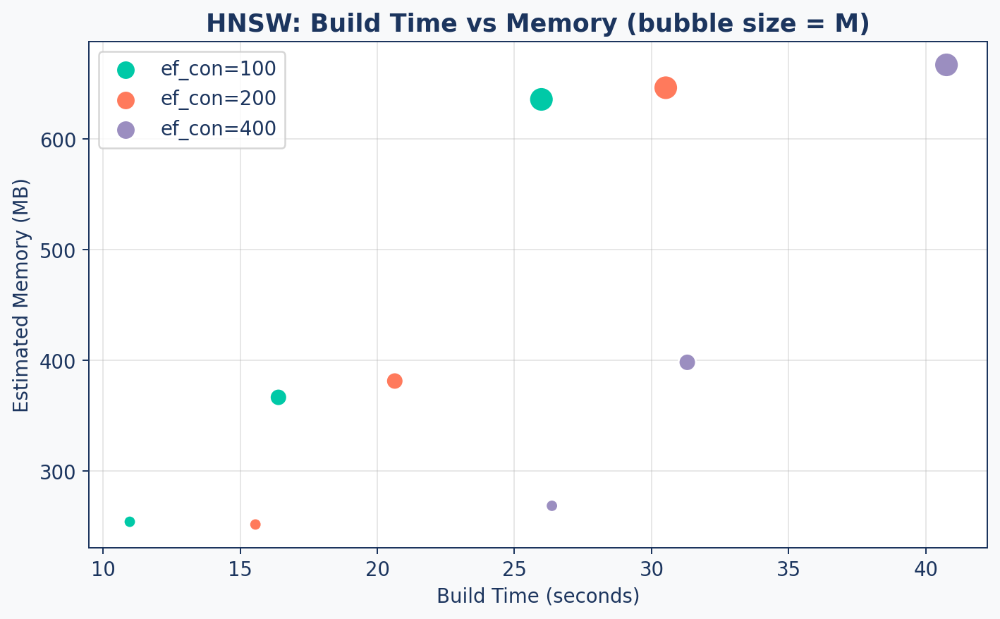
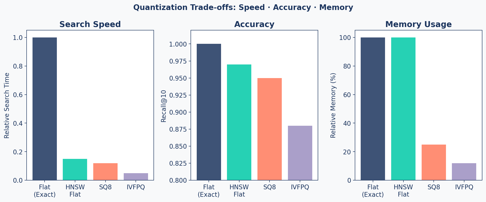
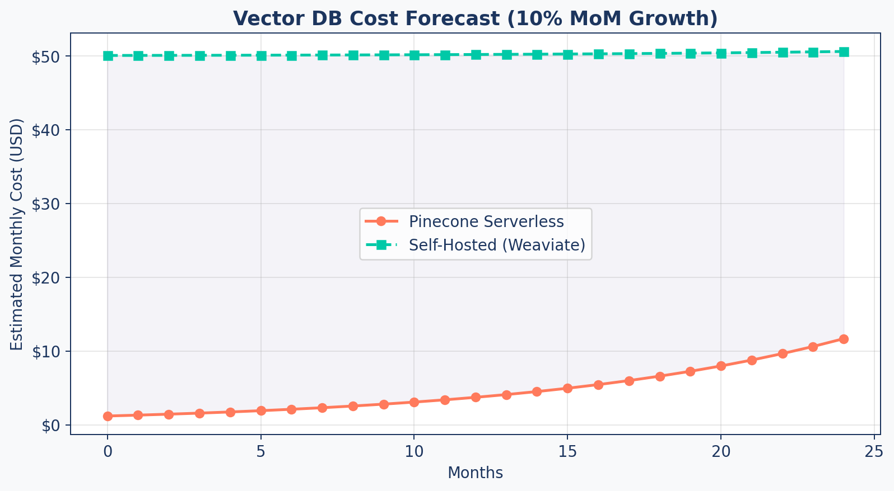

sequenceDiagram
participant App as Application
participant Old as Index v1 (Live)
participant New as Index v2 (Building)
participant Alias as Alias Config
App->>Alias: Read: "live = v1"
App->>Old: Serve queries
Note over New: Build new index<br/>Backfill all data
New->>New: Verify data integrity
App->>Alias: Write: "live = v2"
App->>New: Serve queries (instant switch)
Note over Old: Delete after cooldown
Production Optimization
RAG Foundations & Data Pipelines — Session 6
2026-02-28
A. Prototype to Production
Scaling your RAG system for real users
Agenda
- A. Prototype to Production — The three optimization axes
- B. HNSW Benchmarking — Systematic parameter tuning
- C. Quantization — Trading precision for massive scale
- D. Zero-Downtime Reindexing — Production update strategies
- E. Cost Planning — Budgeting for vector infrastructure
- F. Final Architecture — The complete Research Assistant
The Scale Question
From Prototype to Product
Your RAG system works on 1,000 documents. But production means:
- 100K+ documents growing 10% monthly
- Thousands of queries/day with p95 < 5 seconds
- Zero downtime during knowledge base updates
- Budget approval with a clear cost forecast
Three Optimization Axes
Speed
- HNSW parameter tuning
ef_searchoptimization- Query caching
- Batch operations
Target: < 50ms per search
Accuracy
Mandef_construction- Quantization impact
- Recall@10 monitoring
- Re-ranking quality
Target: > 0.95 Recall@10
Cost
- Memory footprint
- Storage per vector
- API call pricing
- Managed vs self-hosted
Target: < $0.10 per query (including LLM)
B. HNSW Benchmarking
Systematic parameter tuning
Benchmarking Framework
def build_and_benchmark_hnsw(embeddings,
M_list=[16, 32, 64],
ef_construction_list=[100, 200, 400],
ef_search_list=[50, 100, 200]):
"""Benchmark HNSW configurations."""
d = embeddings.shape[1] # embedding dimension
results = []
for M in M_list:
for ef_con in ef_construction_list:
index = faiss.IndexHNSWFlat(d, M)
index.hnsw.efConstruction = ef_con
index.add(embeddings)
for ef_search in ef_search_list:
index.hnsw.efSearch = ef_search
# Benchmark: time + recall
...
results.append({
'M': M, 'ef_con': ef_con,
'ef_search': ef_search,
'search_ms': avg_ms,
'recall': recall_at_10})
return resultsParameter Grid
| Parameter | Values Tested | Effect |
|---|---|---|
| M | 16, 32, 64 | Graph connectivity (memory) |
| ef_construction | 100, 200, 400 | Index build quality (build time) |
| ef_search | 50, 100, 200 | Query-time search depth (latency) |
Total configurations: 3 x 3 x 3 = 27 experiments
Search Time vs Recall

Each point is a parameter configuration. The Pareto frontier shows optimal speed-accuracy trade-offs.
Build Time vs Memory
Bubble size represents M — higher connectivity means more memory but better recall.
Starting Points
Rules of Thumb
| Dataset Size | M | ef_construction | ef_search |
|---|---|---|---|
| < 100K vectors | 16 | 200 | 50-100 |
| 100K - 1M | 32 | 200 | 100-200 |
| > 1M | 32-64 | 400 | 200+ |
You can increase
ef_searchat query time without rebuilding the index. Start low, increase until latency budget is exhausted.
C. Quantization
Trading precision for massive scale
Why Quantize?
100M vectors × 1536 dimensions × 4 bytes = ~614 GB (or ~572 GiB) just for the vectors.
Quantization reduces vector size by storing with lower precision:
- Full float32: 4 bytes/dimension → 6 KB per vector
- SQ8 (8-bit int): 1 byte/dimension → 1.5 KB per vector
- Binary: 1 bit/dimension → 192 bytes per vector
At 100M vectors, going from float32 to SQ8 saves ~460 GB (~430 GiB) of memory.
Quantization Types
| Type | Compression | Recall Impact | Speed Impact |
|---|---|---|---|
| Scalar (SQ8) | 4x | Minimal (~2%) | Faster (cache-friendly) |
| Product (PQ) | 10-100x | Moderate (~5-15%) | Much faster |
| Binary | 32x | Variable (~5-15%) | Fastest |
Recall impact figures are approximate and vary significantly with dataset size, index parameters, and embedding model. Always validate against your evaluation suite.
FAISS Indexes
# 1. Flat Index (Exact - Baseline)
index_flat = faiss.IndexFlatL2(d)
# 2. HNSW (Approximate, Full Precision)
index_hnsw = faiss.IndexHNSWFlat(d, M=32)
# 3. Scalar Quantization (SQ8)
index_sq8 = faiss.IndexScalarQuantizer(
d, faiss.ScalarQuantizer.QT_8bit)
index_sq8.train(embeddings)
# 4. IVF + Product Quantization (IVFPQ)
quantizer = faiss.IndexFlatL2(d)
index_ivfpq = faiss.IndexIVFPQ(
quantizer, d, nlist=100, m=8, nbits=8)
index_ivfpq.train(embeddings)Speed / Accuracy / Memory
When to Use What
| Scale | Recommended Index | Why |
|---|---|---|
| < 100K | HNSW Flat | Best accuracy, memory is fine |
| 100K - 1M | HNSW + SQ8 | 4x memory savings, minimal recall loss |
| 1M - 10M | IVF + PQ | Major memory savings, fast search |
| > 10M | IVF + PQ + OPQ | Maximum compression needed |
Always A/B Test
Quantization must be validated against your ground truth metrics from the evaluation suite. Never assume recall is “good enough” — measure it.
D. Zero-Downtime Reindexing
Updating production without breaking it
Two Strategies
Incremental Updates
- Upsert new documents
- Index is not re-optimized
- Works for small, regular additions
- Quality can degrade over time
Alias-Switching (Full Reindex)
- Build a brand new index
- Backfill all data
- Swap pointer atomically
- Delete old index
Zero-downtime, always optimal
Alias-Switching
Code: PineconeReindexer
class PineconeReindexer:
def execute_zero_downtime_update(self, chunks):
# 1. Generate unique name
timestamp = datetime.utcnow().strftime("%Y%m%d%H%M")
new_name = f"research-assistant-{timestamp}"
# 2. Create & Populate new index
self.create_index(new_name)
self.backfill_data(new_name, chunks)
# 3. Get current live index
old_name = self.alias_manager.get_live_index()
# 4. ATOMIC SWITCH
self.alias_manager.set_live_index(new_name)
# 5. Cleanup old index (after cooldown)
if old_name and old_name != new_name:
self.pc.delete_index(old_name)Safety Checklist
Before Switching Live
- New index has same or more documents than old
- Spot-check 10 known queries produce correct results
- Eval metrics (Hit Rate, MRR) meet thresholds
- Rollback plan — keep old index for 24h before deletion
- Test on staging first — never go straight to production
E. Cost Planning
Budgeting for vector infrastructure
Cost Formula
def estimate_monthly_cost(config, num_vectors,
reads_per_month, writes_per_month):
# Vector storage
bytes_per_vector = config.dimension * 4 # float32
storage_gb = (num_vectors * bytes_per_vector) / 1e9
# Metadata storage
meta_gb = (num_vectors * config.meta_bytes) / 1e9
# Total cost
storage_cost = (storage_gb + meta_gb) * config.$/gb
read_cost = (reads_per_month / 1e6) * config.$/M_reads
write_cost = (writes_per_month / 1e6) * config.$/M_writes
return config.base_fee + storage_cost + read_cost + write_costProvider Comparison
| Provider | Base Fee | Storage/GB | Reads/1M | Writes/1M |
|---|---|---|---|---|
| Pinecone Serverless | $0 | $0.33 | $8.25† | $2.00† |
| Weaviate Cloud | $25–75/mo | Per-dimension pricing | — | — |
| Self-Hosted | ~$50–300/mo VM | $0.10 disk | $0 | $0 |
| pgvector | DB cost | Included | Included | Included |
†Pinecone charges per “read unit” / “write unit”, not per raw query — a single query may consume multiple units. Weaviate Cloud prices by vector dimensions stored, not GB. All figures are approximate as of early 2025 — always verify at each provider’s website.
Cost Forecast
Reduction Strategies
| Strategy | Savings | Trade-off |
|---|---|---|
| Quantization (SQ8) | 75% storage | Small recall loss |
| Larger chunks | Fewer vectors | Less precision |
| Metadata pruning | Up to 50% metadata storage | Less filtering capability |
| Tiered storage | 50%+ | Cold data has higher latency |
| Caching | Varies by query distribution | Stale results for rare queries |
F. Final Architecture
The Research Assistant Picture
A System Architecture
flowchart LR
User["User Query"] --> QP["Query Processor"]
QP -->|"Expanded Queries"| AR["Advanced Retriever"]
AR -->|"Hybrid Search"| VS[("Vector Store")]
AR -->|"BM25 Search"| KS[("Keyword Index")]
VS & KS --> Cands["Candidate Pool"]
Cands --> RR["Cross-Encoder<br/>Re-ranker"]
RR -->|"Top K"| CM["Context Manager"]
CM -->|"Pruned Context"| Gen["LLM Generation"]
Gen -->|"Answer + Citations"| User
subgraph Offline Pipeline
Ingest["Ingestion"] --> VS
Eval["DeepEval Suite"] -.->|"Grades"| Gen
end
style User fill:#9B8EC0,stroke:#1C355E,color:#fff
style QP fill:#9B8EC0,stroke:#1C355E,color:#fff
style AR fill:#00C9A7,stroke:#1C355E,color:#fff
style VS fill:#1C355E,stroke:#1C355E,color:#fff
style KS fill:#1C355E,stroke:#1C355E,color:#fff
style RR fill:#FF7A5C,stroke:#1C355E,color:#fff
style CM fill:#FF7A5C,stroke:#1C355E,color:#fff
style Gen fill:#FF7A5C,stroke:#1C355E,color:#fff
style Ingest fill:#00C9A7,stroke:#1C355E,color:#fff
style Eval fill:#9B8EC0,stroke:#1C355E,color:#fff
ResearchAssistantService
class ResearchAssistantService:
"""Production entry point — integrates all components."""
def __init__(self, vector_store, llm_client):
self.query_processor = QueryProcessor()
self.retriever = AdvancedRetriever(vector_store)
self.context_manager = ContextManager(max_tokens=3000)
self.llm = llm_clientIntegrates:
- Query Understanding (Session 4)
- Hybrid Retrieval & Re-ranking (Session 4)
- Context Optimization (Session 5)
- Citation Generation (Session 5)
The answer() Method
async def answer(self, raw_query):
# 1. Query Processing
queries = self.query_processor.expand(raw_query)
# 2. Hybrid Retrieval (per variation)
all_candidates = []
for q in queries:
results = self.retriever.retrieve(q, candidates=50)
all_candidates.extend(results)
# 3. Deduplicate + Global Re-rank
unique = {doc['id']: doc for doc in all_candidates}
final = self.retriever.rerank(
raw_query, list(unique.values()), top_k=5)
# 4. Context Management + Generation
context = self.context_manager.format(final)
response = await self.llm.generate(
system=CITATION_PROMPT,
user=f"Context:\n{context}\n\nQ: {raw_query}")
return {"answer": response, "citations": final}Agentic RAG — Beyond Single-Shot
RAG architectures can be viewed as increasing levels of sophistication:
| Level | Pattern | What It Adds |
|---|---|---|
| Basic | Single-Shot RAG | One query → retrieve → generate |
| Enhanced | Multi-Query RAG | Expand queries, fuse results |
| Self-Correcting | Corrective RAG | Evaluate → recover from bad retrieval |
| Autonomous | Agentic RAG | Plan → act → observe → loop |
Agentic RAG adds: planning, tool use, multi-step loops, and self-correction across turns.
Agentic RAG Architecture
flowchart LR
U["User Goal"] --> A["Agent<br/>Planner"]
A --> P["Plan<br/>Steps"]
P --> R["Retrieve<br/>Evidence"]
R --> O["Observe<br/>Results"]
O --> D{"Goal<br/>Met?"}
D -- "No" --> A
D -- "Yes" --> S["Synthesize<br/>Answer"]
style U fill:#9B8EC0,stroke:#1C355E,color:#fff
style A fill:#9B8EC0,stroke:#1C355E,color:#fff
style P fill:#00C9A7,stroke:#1C355E,color:#fff
style R fill:#00C9A7,stroke:#1C355E,color:#fff
style O fill:#FF7A5C,stroke:#1C355E,color:#fff
style D fill:#FF7A5C,stroke:#1C355E,color:#fff
style S fill:#1C355E,stroke:#1C355E,color:#fff
Production Checklist
| Component | Status | Metric |
|---|---|---|
| Ingestion pipeline | Handles multi-format (PDF, web) | Coverage |
| Chunking | Factory pattern, configurable | Avg size 500-1000 |
| Vector store | HNSW tuned, persistent | Recall@10 > 0.95 |
| Hybrid retrieval | BM25 + semantic + RRF | Precision@5 > 0.80 |
| Re-ranking | Cross-encoder quality gate | Relevance score > 0.7 |
| Citations | [ID] format, context-pruned | Faithfulness > 0.8 |
| Evaluation | Golden dataset, CI/CD gates | Automated regression |
| Reindexing | Zero-downtime alias switching | No user impact |
The Module 04 Journey
graph LR
S1["Session 1<br/>Architecture"] --> S2["Session 2<br/>Chunking"]
S2 --> S3["Session 3<br/>Vector Storage"]
S3 --> S4["Session 4<br/>Advanced Retrieval"]
S4 --> S5["Session 5<br/>Eval Framework"]
S5 --> S6["Session 6<br/>Production"]
style S1 fill:#9B8EC0,stroke:#1C355E,color:#fff
style S2 fill:#00C9A7,stroke:#1C355E,color:#fff
style S3 fill:#FF7A5C,stroke:#1C355E,color:#fff
style S4 fill:#9B8EC0,stroke:#1C355E,color:#fff
style S5 fill:#00C9A7,stroke:#1C355E,color:#fff
style S6 fill:#1C355E,stroke:#1C355E,color:#fff
Key Takeaways
- Benchmark HNSW parameters systematically — M, ef_construction, ef_search
- Quantization (SQ8, PQ) enables scaling to millions of vectors with 4-30x compression
- Zero-downtime reindexing via alias-switching keeps production running during updates
- Cost planning with growth forecasts justifies infrastructure decisions
- The complete RAG pipeline integrates ingestion, retrieval, generation, and evaluation
- Production is a mindset — monitoring, evaluation, and continuous improvement
Up Next
Lab 6: Production Readiness — benchmark your index, implement quantization, run the full evaluation suite, and finalize the Research Assistant.